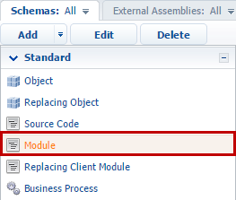
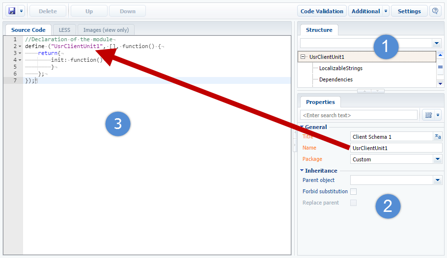
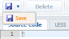
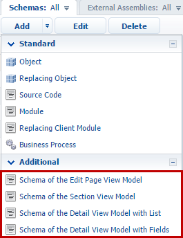
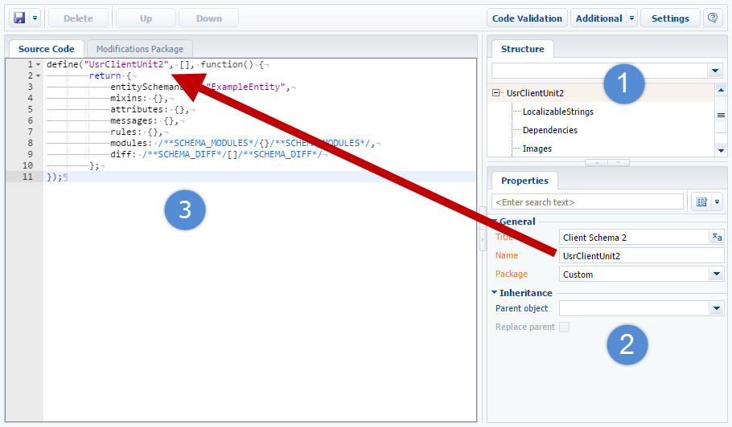
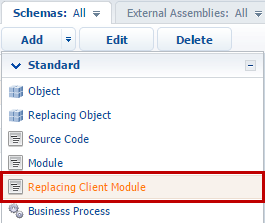
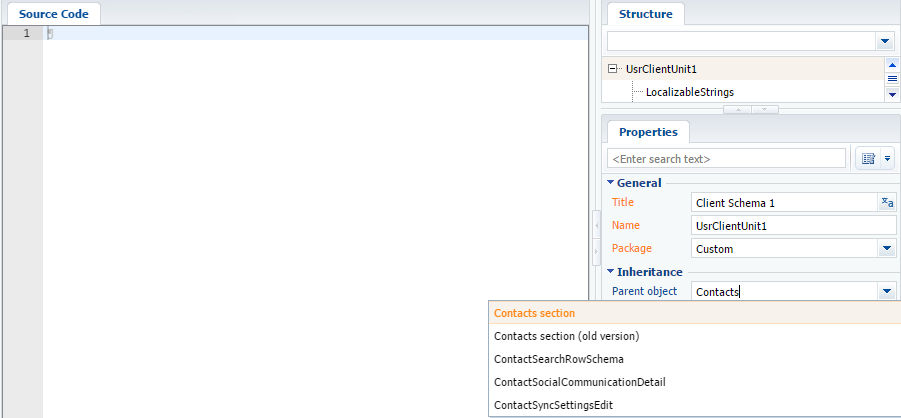
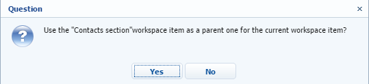
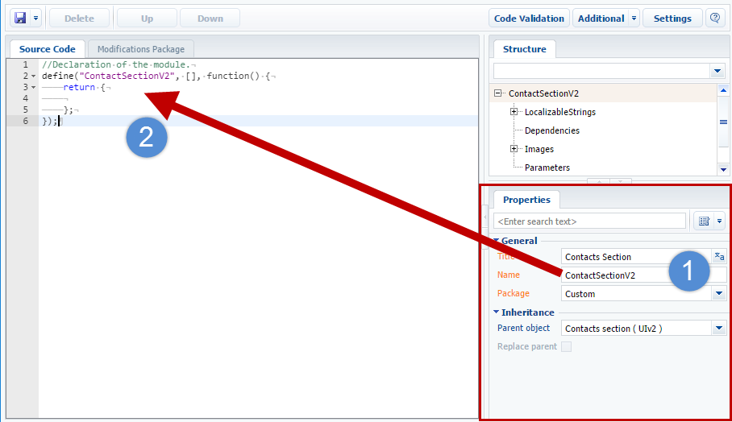

Клиентские модули — это отдельные блоки функциональности, которые загружаются и запускаются по требованию, в соответствии с технологией AMD. Реализация всей пользовательской функциональности выполняется в клиентских модулях. Несмотря на некоторые функциональные различия, все клиентские модули Creatio имеют одинаковую структуру описания, которая соответствует формату описания модулей AMD. Подробнее о клиентских модулях можно узнать из статьи Front-end (JS).
В Creatio можно выделить несколько разновидностей клиентских модулей:
- невизуальный модуль (схема модуля);
- визуальный модуль (схема модели представления);
- модуль расширения и замещающий клиентский модуль (замещающая схема клиентского модуля).
Последовательность создания клиентской схемы несколько отличается для разных типов схем.
Создание новой схемы невизуального модуля
Для создания схемы невизуального модуля необходимо выполнить следующую последовательность действий.
- Перейти в раздел Конфигурация и выбрать пользовательский пакет, в который будет добавлена новая схема.
- На вкладке Схемы выполнить команду Добавить —> Модуль.

- В появившемся дизайнере клиентского модуля необходимо выбрать корневой элемент структуры и заполнить свойства создаваемой схемы модуля:

К основным свойствам схемы модуля относятся:
- Название — название схемы. Может содержать только символы латинского алфавита и цифры. Содержит префикс, указанный в системной настройке Префикс названия объекта (SchemaNamePrefix).
- Заголовок — заголовок схемы. Может быть локализован.
- Пакет — пользовательский пакет, в котором создается схема.
- На вкладке Исходный код дизайнера модуля добавить исходный код модуля. При этом необходимо удостовериться, что название модуля в функции define() совпадает с названием схемы модуля.
- После внесения всех изменений схему модуля нужно сохранить:

Создание новой схемы модели представления
Для создания схемы визуального модуля необходимо выполнить следующую последовательность действий.
- Перейти в раздел Конфигурация и выбрать пользовательский пакет, в который будет добавлена новая схема.
- На вкладке Схемы выполнить одну из команд добавления схемы модели представления, доступных в расширенном меню команд:

С помощью этих команд можно добавить следующие типы схем визуальных модулей:
- Схема модели представления карточки — схема страницы редактирования записи раздела.
- Схема модели представления раздела — схема страницы раздела с реестром и итогами.
- Схема модели представления детали с реестром — схема страницы редактирования детали с реестром.
- Схема модели представления детали с полями — схема страницы редактирования детали с полями.
- В открывшемся дизайнере клиентской схемы модели представления выбрать корневой элемент структурыи заполнить свойства создаваемой схемы.

Основные свойства схемы модели представления совпадают с основными свойствами схемы невизуального модуля, приведенными выше.
- На вкладке Исходный код дизайнера модуля нужно добавить исходный код схемы модели представления. При этом необходимо удостовериться, что название визуального модуля в функции define() совпадает с названием схемы модели представления.
После внесения всех изменений схему модуля нужно сохранить.
Создание замещающей схемы
Замещающие схемы предназначены для расширения функциональности уже существующих схем. Причем существующие схемы могут также быть замещающими и принадлежать разным пакетам.
Для создания замещающей схемы невизуального или визуального модуля необходимо выполнить следующие шаги.
- Перейти в раздел Конфигурация и выбрать пользовательский пакет, в который будет добавлена новая схема модуля.
- На вкладке Схемы выполнить команду Добавить —> Замещающий клиентский модуль.

- В открывшемся дизайнере клиентского модуля нужно выбрать корневой элемент структуры.

- Для того чтобы модуль замещал определенный раздел или страницу, необходимо в поле Родительский объект свойств схемы указать заголовок той базовой схемы модели представления, которую требуется заместить. Например, для создания замещающей схемы раздела Контакты необходимо указать в качестве родительского объекта схему ContactSectionV2. Для этого в поле Родительский объект свойств замещающей схемы необходимо начать вводить заголовок схемы "Раздел контакты" и выбрать нужное значение из выпадающего списка.
После подтверждения выбранного родительского объекта остальные поля свойств заполнятся автоматически.
Диалог подтверждения использования родительской схемыЗамещающая клиентская схема в дизайнере клиентских схем - На вкладке Исходный код дизайнера модуля нужно добавить исходный код схемы модели представления. При этом необходимо удостовериться, что название замещающего модуля в функции define() совпадает с названием схемы модели представления.
- После внесения всех изменений схему модуля нужно сохранить.